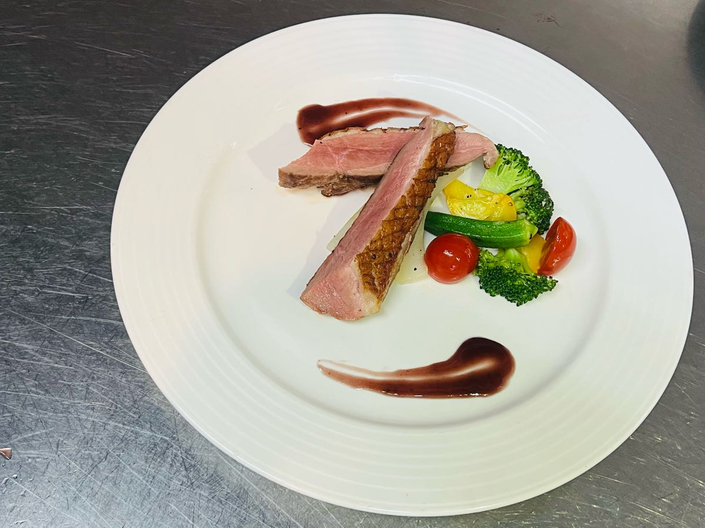
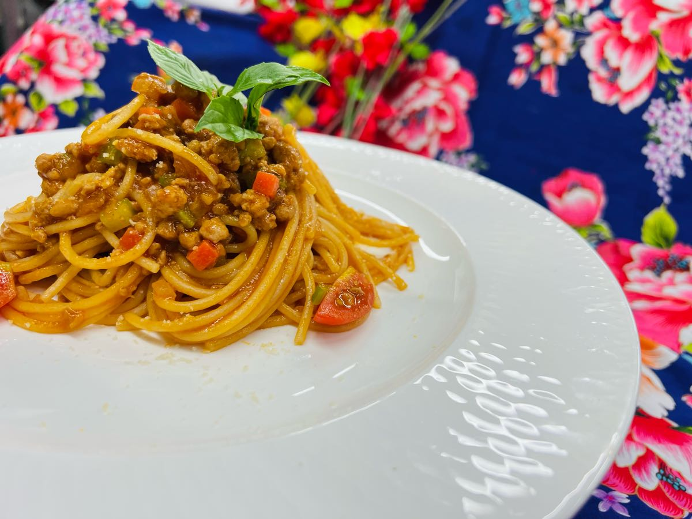
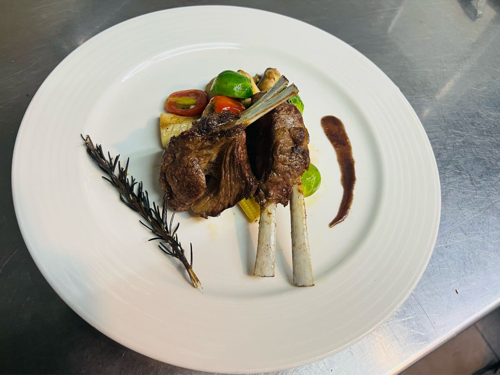
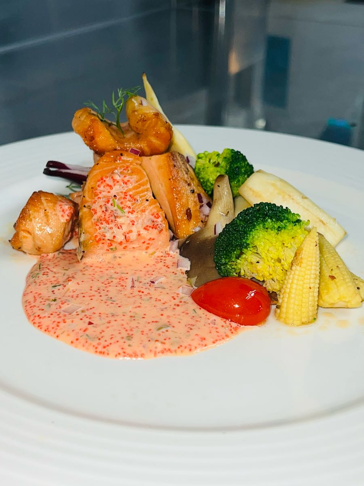

橙汁南瓜燉飯
第五道是普遍的燉飯，但加上南瓜的營養後，非常適合小孩和老人家吃，軟爛自由掌控，是最值得學的一道餐點!
橙汁南瓜燉飯
第五道是普遍的燉飯，但加上南瓜的營養後，非常適合小孩和老人家吃，軟爛自由掌控，是最值得學的一道餐點!哈囉你好，歡迎來到西餐美食食譜介紹，希望以下的做法各位能喜歡，也可以動手試試看哦!
 香煎鴨胸佐紅酒醬介紹 第一道介紹的是頂級鴨胸，即使在家也能用一般的鴨胸去製作，只要熟度掌控好其實還是不錯吃的，完全不輸高級餐廳呢!
 茄汁義大利麵 接下來第二道是最常見的義大利麵，很多人會覺得煮不出味道又或者是麵太爛太硬，這邊會教你不失敗又好吃的訣竅。
 香煎迷迭羊小排 第三道是帶骨羊小排，製作過程常複雜，時間也長，熟度需要掌握清楚，是很考驗技術的一道餐點
 香煎鮭魚佐魚子醬 第四道是連超市都買的到的食材，只要加點裝飾就能跟高級餐廳一樣高檔!
橙汁南瓜燉飯
第五道是普遍的燉飯，但加上南瓜的營養後，非常適合小孩和老人家吃，軟爛自由掌控，是最值得學的一道餐點!